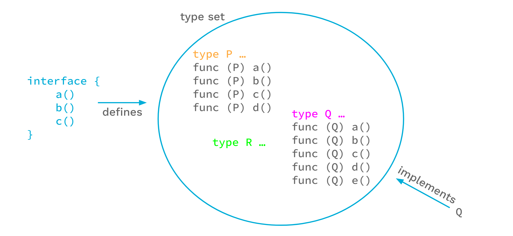
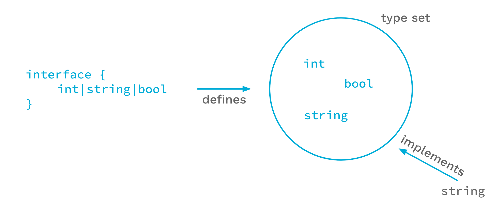
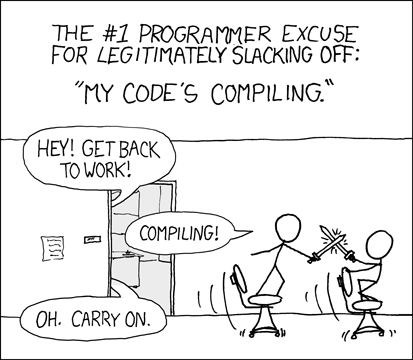
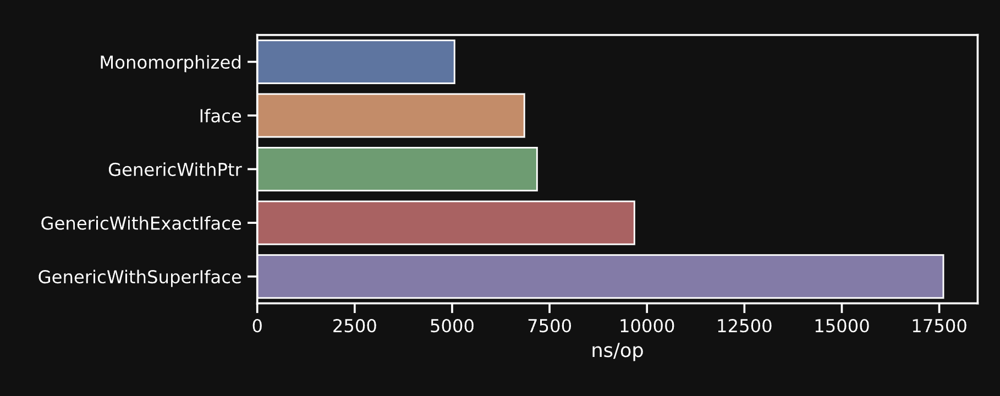

2023
I will consider algorithms, not programs. It's fruitless to try to precisely distinguish between them, but we all have a general idea that an algorithm is a higher-level abstraction that is implemented by a program. For example, here is Euclid's algorithm for computing GCD(M,N), the greatest common divisor of positive integers M and N:
Let x equal M and y equal N. Repeatedly subtract the smaller of x and y from the larger. Stop when x and y have the same value, at which point that value is GCD (M, N).Implementing this algorithm in a programming language requires adding details that are not part of the algorithm. For example, should the types of M and N be single-precision integers, double-precision integers, or some class of objects that can represent larger integers? Should the program assume that M and N are positive or should it return an error if they aren't?
—— If You're Not Writing a Program, Don't Use a Programming Language. Lamport, Bulletin of EATCS (The European Association for Theoretical Computer Science) No. 125, June 2018.
多数情况下，类型并不是算法的关注对象，而通常只是为了抽象内存表示不得不引入的概念，因此造成了类型和算法，或者说数据和逻辑的耦合. 为了解耦二者，我们希望有一种方式能够执行类型无关的编程.
多くの場合、型はアルゴリズムの関心事ではなく、メモリ表現を抽象化するためにやむを得ず導入される概念に過ぎません. これにより型とアルゴリズム、つまりデータとロジックの結合が生じます. この結合を解消するために、型に依存しないプログラミングを実現する方法が求められます.
Before generics, Go had two strategies: (1) hardcode one copy of code per type (typically via codegen), or (2) merge with interface{} type assertions (commonly used in many foundational framework libraries).
引入泛型之前的两类策略：为所有类型硬编码一份代码（通常采用 codegen）技术，或 interface{} 合并类型断言（通常为许多基础框架类库所采用）.
ジェネリクス導入以前のGoには2つの戦略がありました：（1）型ごとにコードを1部ハードコードする（通常はcodegenを使用）、または（2）interface{}による型アサーションに統合する（多くの基盤フレームワークライブラリで採用）.
📹 How to do generics without generics.mp4
Strategy (1) — codegen. Tools like tplgen generate one function per type:
策略（1）—— codegen. 工具如 tplgen 为每种类型生成一份函数：
戦略（1）—— codegen. tplgen のようなツールが型ごとに関数を1つ生成します：
package slices
// Code generated by tplgen. DO NOT EDIT.
// See: https://code.byted.org/iespkg/toolkit/tree/master/tplgen
func FindString(s []string, cb func(v string) bool) (string, int)
func FindInt(s []int, cb func(v int) bool) (int, int)
func FindInt8(s []int8, cb func(v int8) bool) (int8, int)
func FindInt16(s []int16, cb func(v int16) bool) (int16, int)
func FindInt32(s []int32, cb func(v int32) bool) (int32, int)
func FindInt64(s []int64, cb func(v int64) bool) (int64, int)
func FindUint(s []uint, cb func(v uint) bool) (uint, int)
func FindUint8(s []uint8, cb func(v uint8) bool) (uint8, int)
func FindUint16(s []uint16, cb func(v uint16) bool) (uint16, int)
func FindUint32(s []uint32, cb func(v uint32) bool) (uint32, int)
func FindUint64(s []uint64, cb func(v uint64) bool) (uint64, int)
func FindFloat32(s []float32, cb func(v float32) bool) (float32, int)
func FindFloat64(s []float64, cb func(v float64) bool) (float64, int)Strategy (2) — interface{}. Used in GORM's Select:
策略（2）—— interface{}. 在 GORM 的 Select 中的应用：
戦略（2）—— interface{}. GORMのSelectでの使用例：
// Select specify fields that you want when querying, creating, updating
//
// Use Select when you only want a subset of the fields. By default, GORM will select all fields.
// Select accepts both string arguments and arrays.
//
// // Select name and age of user using multiple arguments
// db.Select("name", "age").Find(&users)
// // Select name and age of user using an array
// db.Select([]string{"name", "age"}).Find(&users)
func (db *DB) Select(query interface{}, args ...interface{}) (tx *DB) {
switch v := query.(type) {
case []string:
case string:
default:
}
return
}Both have obvious drawbacks: codegen produces verbose, hard-to-maintain code and can only generate for known types — it introduces build complexity outside the language. interface{} loses compile-time type checking and adds runtime overhead.
二者的缺陷是显而易见的：重复的代码生成冗长不堪，难以维护，并且仅能针对已知类型生成，codegen 引入了语言之外的构建复杂度. interface{} 则失去了强语言类型编译期类型检查的优势，并且在运行时引入了额外的开销.
どちらも明らかな欠点があります：codegenは冗長で保守困難なコードを生成し、既知の型にのみ対応でき、言語外のビルド複雑性を導入します. interface{}はコンパイル時の型チェックを失い、実行時のオーバーヘッドを加えます.
A generic function is declared by appending a type parameter list in square brackets after the function name:
泛型函数声明形式如下：
ジェネリック関数は関数名の後に角括弧で型パラメータリストを追加して宣言します：
func f[T constraint](t T) T {}
f[string] => func f(t string) string {}
f[int64] => func f(t int64) int64 {}
f("string")The grammar for type parameters:
类型参数的语法规则：
型パラメータの文法規則：
TypeParameters = "[" TypeParamList [ "," ] "]" .
TypeParamList = TypeParamDecl { "," TypeParamDecl } .
TypeParamDecl = IdentifierList TypeConstraint .
A [] after the function name introduces type parameter T with constraint constraint. In the parameter list and return values, T can be used as a formal parameter type. At call sites, the type can be specified explicitly as f[string]("name"), or omitted when unambiguous (f("name")) to let the compiler infer it. For cases where inference fails (e.g., untyped constants), explicit instantiation f[int64](0) or a typed variable conversion f(int64(0)) is required.
在函数名后引入一个 [] 指定类型参数 T 和类型约束 constaraint. 在随后的参数列表和返回值中可以使用类型 T 声明形式参数. 使用时，可以采用 f[string]("name") 的形式显式指定需要实例化的类型，在没有二义性时可以省略类型参数 f("name") 让编译器自动推导. 对于无法自动推导的情况，例如无类型常量则只能采用前一种形式强制指定类型 f[int64](0)，或者在变量侧转换为有类型变量 f(int64(0)).
関数名の後の [] で型パラメータ T と制約 constraint を指定します. 後続のパラメータリストと戻り値で T を仮パラメータ型として使用できます. 呼び出し時は f[string]("name") で明示的に型を指定するか、曖昧でなければ f("name") と省略してコンパイラに推論させられます. 無型定数など推論できない場合は f[int64](0) で明示するか、f(int64(0)) で型付き変数に変換する必要があります.
Generic struct declaration is similar:
泛型结构的声明形式类似：
ジェネリック構造体の宣言も同様です：
type Container[T constraint] struct { v T }
func (c Container[T]) Get() {}A practical example — implementing a Find function that returns the first value in a list satisfying a given predicate, along with its index. any is used as the type constraint, meaning T can be any type:
来看一个实用的例子，实现 Find 函数返回列表中满足指定谓词的第一个值及其位置. 这里采用了 any 作为类型约束，表示参数 T 可以是任意类型.
実用的な例として、リスト中で指定した述語を満たす最初の値とそのインデックスを返す Find 関数を実装します. 型制約として any を使用し、T が任意の型であることを示します：
func Find[T any](elements []T, predicate func(T) bool) (T, int) {
for idx, v := range elements {
if predicate(v) {
return v, idx
}
}
return *new(T), -1
}For a generic type parameter, the permitted operations are limited. From the Type Parameters Proposal:
对于一般的任意类型而言，其所能支持的操作是有限的：
ジェネリック型パラメータに対して許可される操作は限られています. Type Parameters Proposalより：
The operations permitted for any type are:
- declare variables of those types
- assign other values of the same type to those variables
- pass those variables to functions or return them from functions
- take the address of those variables
- convert or assign values of those types to the type
interface{}- convert a value of type
Tto typeT(permitted but useless)- use a type assertion to convert an interface value to the type
- use the type as a case in a type switch
- define and use composite types that use those types, such as a slice of that type
- pass the type to some predeclared functions such as
new—— Type Parameters Proposal
A type constraint restricts the set of types a type parameter may take, and thereby expands the operations available on that type. Go reuses the interface{} keyword for constraints, and is compatible with the method-list form of interface definitions.
类型约束（type constraint）是用于限制类型参数选取的机制，通过定义类型必须满足的约束，限制类型实例化的范畴，以此扩展调用方操纵类型的能力. go 的类型约束语法复用了 interface{} 关键字，并且兼容通过接口的方法列表形式定义约束.
型制約は型パラメータが取り得る型の集合を制限し、その型に対して利用できる操作を拡張するメカニズムです. Goは制約に interface{} キーワードを再利用し、メソッドリスト形式のインタフェース定義との互換性を持ちます.
type Vector interface {
IsZero() bool
Norm(n int64) float64
}
// interfaces as set of member functions,
// or it can be considered as intersets of member-defined interfaces:
// type Zeroable interface {
// IsZero() bool
// }
// type Normable interface {
// Norm(n int64) float64
// }
//
// Vector <=> Zeroable \interset Normable
This form of interface can serve both as a parameter type and as a type constraint.
这种形式的 interface 实际上既可以作为参数类型，也可以作为类型约束.
この形式のインタフェースはパラメータ型としても型制約としても使用できます.
Furthermore, interface is extended with new syntax to specify type sets as type constraints:
此外，interface 拓展了新语法，可以指定类型集合作为类型约束.
さらに、interface は型集合を型制約として指定する新構文で拡張されています：
// Union of types
type DirectSigned interface {
int | int8 | int16 | int32 | int64
}
// Mark with ~ to match underlying types
type Signed interface {
~int | ~int8 | ~int16 | ~int32 | ~int64
}
func Factorize[T DirectSigned](n T) []T {
// ...
}
// UserID is an instance of Signed but not DirectSigned
type UserID int64
// UserID does not satisfy DirectSigned (possibly missing ~ for int64 in DirectSigned)
var f = Factorize[UserID]
Once a type set is included in an interface definition, that interface can only be used as a type constraint — not as a plain parameter type:
引入了类型集合后的 interface 定义则只能作为类型约束，不能再作为一般参数类型.
型集合を含むインタフェース定義は型制約としてのみ使用でき、通常のパラメータ型としては使用できません：
func f(a Signed) {} // cannot use type Signed outside a type constraint: interface contains type constraints
Go provides two built-in constraints: any (alias for interface{}, allows any type) and comparable (types supporting operator==). Since Go does not support operator overloading, comparable is essentially a built-in type set and cannot be extended to user-defined types. In practice, comparable is most commonly used as the constraint for map keys.
go 提供 any（允许任意类型，实际上只是 interface{} 的别名）和 comparable（支持 operator== 的内置类型）两类 builtin 约束. 众所周知，由于我们无法做 operator overloading，comparable 的约束本质上只是一个内置类型的集合，并不能拓展用于自定义类型. 实践上，comparable 通常用于作为 map key 的约束类型.
Goは2つの組み込み制約を提供します：any（interface{} の別名で任意の型を許可）と comparable（operator== をサポートする型）. Goはオペレータのオーバーロードをサポートしないため、comparable は本質的に組み込み型の集合であり、ユーザー定義型には拡張できません. 実践では comparable は主にマップキーの制約として使われます.
// comparable is an interface that is implemented by all comparable types
// (booleans, numbers, strings, pointers, channels, arrays of comparable types,
// structs whose fields are all comparable types).
// The comparable interface may only be used as a type parameter constraint,
// not as the type of a variable.
type comparable interface{ comparable }
Additionally, golang.org/x/exp/constraints provides more common type sets, including Ordered — all built-in types supporting operator<, operator<=, operator>=, operator>:
此外，golang.org/x/exp/constraints 给出了另外一些常见的基本类型集合. 其中一个比较重要的是全序关系约束 Ordererd，定义了所有支持 operator<、operator<=、operator>=、operator> 的内置类型.
さらに、golang.org/x/exp/constraints は追加の共通型集合を提供します. 特に重要なのは全順序制約 Ordered で、operator<、operator<=、operator>=、operator> をサポートするすべての組み込み型を定義します：
type Ordered interface {
Integer | Float | ~string
}The current generics implementation has the following limitations:
目前的泛型实现存在以下缺陷：
現在のジェネリクス実装には以下の制限があります：
1. Methods cannot have type parameters. This prevents type-transforming chain calls (see §4.2.2):
1. 方法不支持类型参数. 这导致了我们无法实现变换类型的链式调用（4.2.2）.
1. メソッドは型パラメータを持てません. これにより型変換を伴うチェーン呼び出しが実現できません（§4.2.2参照）：
type Container[T any] interface {}
// method must have no type parameters
func (c Container[T]) Map[U any](mapper func(T) U) U {}2. No specialization. To implement special logic for a specific type, you must fall back to type switches:
2. 不支持特化. 若需要为某种类型实现特殊逻辑，我们只能走回 type switch 的老路：
2. 特殊化をサポートしません. 特定の型に対して特別なロジックを実装するには型スイッチに頼るしかありません：
func Equal[T int64 | float64](a, b T) {
switch v := any(a).(type) {
case int64:
return a == b
case float64:
return math.Abs(v - any(b).(float64)) < 0.000001
default:
panic(nil)
}
}3. Structs cannot be elements of a type set; struct fields cannot be accessed. Even if all structs in the type set share a common field, it cannot be accessed directly inside the generic function:
3. 无法使用 struct 作为类型集合的元素. 无法访问 struct field. 即使类型集合中的所有结构都拥有公共的字段，我们也无法在泛型函数中直接访问.
3. 型集合の要素として struct を使用できず、構造体フィールドにアクセスできません. 型集合内のすべての構造体が共通のフィールドを持っていても、ジェネリック関数内で直接アクセスできません：
type User struct {
ID int64
}
type Room struct {
ID int64
}
func CheckID[T User|Room](t T) bool {
return t.ID > 0 // t.ID undefined (type T has no field or method ID)
}One workable (but inelegant) solution is to define a getter and construct the constraint via a method set:
一个可行但不优雅的解决方案是设置 getter，然后通过方法集合构造类型约束：
実用的だが優雅でない解決策として、ゲッターを定義してメソッドセットで制約を構築する方法があります：
func (u User) GetID() int64 {
return u.ID
}
func (r Room) GetID() int64 {
return r.ID
}
func CheckID[T interface{ GetID() int64 }](t T) bool {
return t.GetID() > 0
}Another very tricky strategy exploits forced conversion based on identical struct memory layout (same underlying type + same field order):
另外一个非常 tricky 的策略是利用 struct 内存布局（底层类型+顺序）一致时的强制转换特性：
もう一つの非常にトリッキーな戦略は、構造体のメモリレイアウト（基底型+フィールド順序）が同一の場合の強制変換特性を利用することです：
type User struct {
ID int64
}
type Room struct {
ID int64
}
type Comment struct {
ID int64
Content string
}
type Entity struct {
ID int64
}
func CheckID[T User|Room](t T) bool {
// pass compile since both User and Room shared the same memory layout with Entity
return Entity(t).ID > 0
}
func CheckIDV2[T User|Room|Comment](t T) bool {
// cannot convert t (variable of type T constrained by User | Room | Comment)
// to type Entity: cannot convert Comment (in T) to type Entity
return Entity(t).ID > 0
}There are two fundamental strategies for implementing generics:
原则上，泛型实现有两类思路：
原則として、ジェネリクスの実装には2つの基本的な戦略があります：
(1) Monomorphisation (单态化) / Stenciling. Generate a separate copy of code for each distinct type instantiation at compile time:
(1) Monomorphisation（单态化）/ Stenciling. 即编译期为每一次不同类型的实例化生成一份代码.
(1) 単態化（Monomorphisation）/ ステンシル化（Stenciling）. コンパイル時に型のインスタンス化ごとに個別のコードを生成します：
func f[T1, T2 any](x int, y T1) T2 {
// ...
}
var a float64 = f[int, float64](7, 8.0)
var b struct{f int} = f[complex128, struct{f int}](3, 1+1i)Expands to two separate functions:
展开为两份独立函数：
2つの独立した関数に展開されます：
func f1(x int, y int) float64 {
// ... identical bodies ...
}
func f2(x int, y complex128) struct{f int} {
// ... identical bodies ...
}This eliminates runtime overhead by moving all decisions to compile time. Performance-sensitive system languages like C++, D, and Rust use this approach. The downside is worse compile-time performance and binary bloat.
这一方式最大程度地减轻了运行时的负担，把一切计算都放在编译器进行，因此一般对运行时性能要求较高的系统级语言会采取这一实现，如 C++、D 和 Rust. 但缺陷是劣化编译期性能，且容易造成编译后二进制体积的膨胀.
すべての判断をコンパイル時に行うことで実行時のオーバーヘッドを排除します. C++、D、Rustのようなパフォーマンス重視のシステム言語がこのアプローチを採用しています. 欠点はコンパイル時性能の低下とバイナリサイズの肥大化です.

(2) Boxing + Virtual Table. In some sense, monomorphisation is REPEAT YOURSELF — since the function logic is the same, why can't we branch only on the type-dependent parts? The Boxing approach treats a generic type as a parameterized type: essentially an extra parameter describing how to interpret a memory space. To correctly interpret and operate on that memory, extra information is generated at compile time and written into the data section. For Go's generics implementation, this structure is called a dictionary, which is passed as the first argument on every generic function call to inform the callee of the necessary details.
(2) Boxing + Virtual Table. 某种意义上，monomorphisation 在 REPEAT YOURSELF. 既然函数逻辑是相同的，为什么我们不能在仅涉及类型相关的部分再去做分支选择呢？Boxing 路线的基本思路是，所谓泛型——或者说参数化类型，本质上就是多了一个定义内存空间解释模式的参数. 但为了能够正确地解释内存空间，并对其执行正确的操作，我们需要在编译期生成一些额外的信息指导泛型函数的运行时行为，其中一项重要内容是，引入一个 virtual table 在运行时决定泛型类型的函数调用的实际地址. 这一思路实际上可以用于一般的多态特性实现. 例如 C++ virtual member function 和 Go interface 采用了这一实现.
对于实际的 go 泛型实现，这一额外的信息结构体被称为 dictionary，在编译期生成并写入 data section. 并且在每次泛型函数调用时将 dictionary 作为第一个参数加入参数列表中，以告知 callee 必要的信息.
(2) Boxing + 仮想テーブル. ある意味で、単態化はDO REPEAT YOURSELFです——関数ロジックが同じなら、型依存の部分だけで分岐できないのでしょうか？Boxingアプローチはジェネリック型をパラメータ化された型として扱います：本質的にはメモリ空間の解釈方法を記述する追加パラメータです. そのメモリを正しく解釈・操作するため、コンパイル時に追加情報が生成されデータセクションに書き込まれます. Goのジェネリクス実装では、この構造体をディクショナリと呼び、ジェネリック関数呼び出しのたびに最初の引数として渡されます. C++の仮想メンバー関数やGoのインタフェースも同様の仕組みを採用しています.
When we generate code for a generic function, we will generate only a single chunk of assembly for that function. It will take as an argument a dictionary, which is a set of information describing the concrete types that the parameterized types take on. It includes the concrete types themselves, of course, but also derived information as we will see below.
—— Generics implementation - Dictionaries
Since some dispatch decisions are deferred to runtime, this approach reduces compile-time cost and avoids binary bloat, but trades runtime performance.
由于某些分支决策被延迟到了运行时，因此这种思路虽然降低了编译期开销且避免二进制膨胀，但牺牲了运行时性能.
一部のディスパッチ判断が実行時まで延期されるため、このアプローチはコンパイル時のコストとバイナリ肥大化を避けられますが、実行時性能を犠牲にします.
(3) Go's approach: GC Shape Stenciling with Dictionaries. Go combines both strategies. It generates one copy of code per distinct GC shape, and within the same GC shape uses the Dictionary mechanism. This achieves a balance between compile-time and runtime performance.
(3) go 的泛型实现是上述两种方式的综合. 实际采用了 GC shape Stenciling with Dictionaries 机制. 即为每种不同的 GC shape 类型各生成一份代码，但同一种 GC shape 内部则采用 Dictionaries 的机制实现，因此在编译期和运行时性能之间取得了一定的平衡.
(3) GoのアプローチはGC Shape StencilingとDictionaries の組み合わせです. 異なるGC shapeごとに1つのコードを生成し、同じGC shape内ではDictionaryメカニズムを使用します. これによりコンパイル時と実行時の性能のバランスを実現します.
In theory, we can set any partition of the type set defined by a generic constraint as the boundary between strategy (1) and strategy (2), generating one copy of code per partition subset and using the Boxing mechanism within each subset. The coarser the partition, the less code is generated, but the more runtime performance is sacrificed. The Go generics design aims to minimize partition granularity to reduce virtual-table bloat, hence GC Shape as the standard. Two types share the same GC shape if they have the same underlying type, or if both are pointer types. In this case, memory interpretation and many operations (e.g., operator+, make, new, len) are consistent within the group, and dispatcher information for those operations need not be stored in the virtual table.
理论上，我们可以设定泛型约束所定义的类型集的任意分划，作为策略（1）与策略（2）的分界线，为每一个分划的子集生成一份代码，而在分划的子集之内则采取 Boxing 机制，分划的粒度越大，生成的代码越少，则牺牲的运行时性能越多. 就 go 泛型实现设计文档的思路而言，是尽可能缩减分划的粒度以弱化虚表的膨胀，因此采用 GC Shape 作为标准. 所谓相同的 GC shape，指的是的两种类型实际上拥有相同的底层类型，或均为指针类型. 此时，对内存的解释和许多操作在同一类中得以保持一致，例如 operator+、make、new、len，而不必将对应操作的 dispatcher 信息存入虚表中.
理論的には、ジェネリック制約で定義された型集合の任意の分割を戦略（1）と（2）の境界として設定し、各部分集合ごとにコードを生成してその内部ではBoxingを用いることができます. 分割が粗いほどコードは少なくなりますが、実行時性能の犠牲が増えます. Go設計ではGC Shapeを基準として分割粒度を最小化し仮想テーブルの肥大化を抑えます. 同じGC shapeとは、2つの型が同じ基底型を持つか、両方ともポインタ型である場合です. この場合、メモリ解釈や多くの操作（operator+、make、new、lenなど）がグループ内で一貫しており、仮想テーブルにディスパッチャ情報を格納する必要がありません.
Two concrete types are in the same gcshape grouping if and only if they have the same underlying type or they are both pointer types. We are intentionally defining gcshapes such that we don't ever need to include any operator methods (e.g. the implementation of the "+" operator for a specified type arg) in a dictionary. In particular, fundamentally different built-in types such as
intandfloat64are never in the same gcshape. Evenint16andint32have distinct operations (notably left and right shift), so we don't put them in the same gcshape. Similarly, we intend that all types in a gcshape will always implement builtin methods (such asmake/new/len) in the same way.—— Go 1.18 Implementation of Generics via Dictionaries and Gcshape Stenciling
For primitive types, this granularity is small enough. But for pointer types (including interface types), it is arguably too coarse. In practice — given how widely interface types are used — GC Shape often cannot avoid the Boxing penalty, and whether sacrificing runtime performance to reduce compile-time cost is truly worth it remains a point of debate.
对于基本类型而言，这样的粒度的确已经足够小，但对于指针类型（包括接口类型）而言，这样的粒度似乎又太大了. 因此在接口特性被广泛采用的现状下，GC Shape 的策略很多时候并不能避免 Boxing 的缺陷，为了降低编译期开销而牺牲运行时性能是否真的值得仍然存在争议.
プリミティブ型に対してはこの粒度で十分ですが、ポインタ型（インタフェース型を含む）に対しては粗すぎるかもしれません. インタフェース型が広く使われている現状では、GC ShapeはBoxingのペナルティを避けられないことが多く、コンパイル時コスト削減のために実行時性能を犠牲にすることが本当に価値があるかは議論の余地があります.

Regardless of whether we consider Go as a "systems-oriented" language, it feels like runtime dictionaries was not the right technical implementation choice for a compiled language at all.
—— Generics can make your Go code slower
DO NOT pass an interface to a generic function, under any circumstances. Because of the way shape instantiation works for interfaces, instead of de-virtualizing, you're adding another virtualization layer that involves a global hash table lookup for every method call. When dealing with Generics in a performance-sensitive context, use only pointers instead of interfaces.
—— Generics can make your Go code slower
The strongest signal is when you are implementing the same logic for different types — the DRY instinct will naturally drive you toward generics. Beyond that, the best fit is implementing fundamental data structures and algorithms (including algorithms on built-in data types like slice and map), since most data structures and algorithms are type-agnostic and are ideal candidates for decoupling.
何时使用泛型？最强烈的提示信息是，你在为不同类型重复实现一套同样的逻辑，这时候 DO NOT REPEAT YOURSELF 的本能会驱使我们立刻泛型化，此外是实现基础数据结构和算法时（包括在内置的数据类型 slice、map 上实现算法时），这是因为大部分数据结构和算法同类型无关，此时非常适合作解耦.
最も強いシグナルは、異なる型に対して同じロジックを繰り返し実装しているときです——DRYの本能が自然にジェネリクスへと向かわせます. それ以外では基本的なデータ構造とアルゴリズムの実装時（slice や map などの組み込みデータ型上のアルゴリズムを含む）が最適で、大部分のデータ構造とアルゴリズムは型に依存しないため、疎結合化に理想的です.
As a practical example: we implemented a trie with generics in a menu-management service. Our actual requirement only needed to operate on int64, but the reason for not using int64 directly was not reusability — it was because irrelevant concrete details cause reading inconvenience and confusion (primitive obsession greatly exacerbates this). It also helps to mentally exclude type-specific concepts and methods when writing the code.
举个实践中的例子，我们在应用元数据菜单管理中采用泛型实现了一棵 trie. 事实上，我们的需求本身只需要能够操作 int64 类型，但此处不直接采用 int64 并不是出于可复用性的考虑，而是因为我认为无关的具体细节反而会造成阅读上的不便和困惑（基本类型偏执很大程度上加剧了这一问题）. 此外，也有助于我们在编码时排除具体类型相关的概念和方法.
実践例として、メニュー管理サービスでジェネリクスを使ってトライ木を実装しました. 実際の要件は int64 型のみを操作すればよかったのですが、int64 を直接使わなかった理由は再利用性ではなく、無関係な具体的詳細がかえって読みやすさを損なう（基本型への執着がこの問題を大きく悪化させます）と考えたからです. また、コーディング時に型固有の概念やメソッドを排除するのにも役立ちます.
gg: FP in Practicegg：实践中的函数式编程gg：実践における関数型プログラミング
One major benefit of generics in practice is enabling a degree of functional programming style. Consider the most fundamental fp combinator, map. Without generics and without overloading, it can only be implemented by appending a type-suffix string to every function signature:
在实践中引入泛型后的一大优点在于使得一定程度上的函数式编程风格成为可能，考虑 fp 中最基础的 map 算子，在没有泛型，并且不支持重载的情况下，map 算子只能被迫通过给函数签名加上一串类型后缀来实现：
実践でジェネリクスを導入する大きな利点の一つは、ある程度の関数型プログラミングスタイルが可能になることです. 最も基本的なFPコンビネータである map を考えます. ジェネリクスなし・オーバーロードなしでは、型サフィックスを関数シグネチャに追加するしかありません：
func MapInt16(f func(int16) int16, s []int16) []int16
func MapInt16Bool(f func(int16) bool, s []int16) []bool
func MapInt16Float32(f func(int16) float32, s []int16) []float32
func MapInt16Float64(f func(int16) float64, s []int16) []float64
func MapInt16Int(f func(int16) int, s []int16) []int
func MapInt16Int32(f func(int16) int32, s []int16) []int32
func MapInt16Int64(f func(int16) int64, s []int16) []int64
// ...With generics, a single definition covers all cases:
引入泛型后我们只则需要写：
ジェネリクスを使えば、1つの定義ですべてのケースに対応できます：
func Map[T any, U any](f func(T) U, s []T) []UByteDance's Go generics library GG (Go 泛型基础库) packages a large number of common generic function implementations. At a high level, gg consists of three sub-modules:
语言团队出品的 go 泛型库 GG（Go 泛型基础库） 封装了大量常用的泛型函数实现. 宏观上，我们可以认为 gg 大致包括三个子模块：
ByteDanceの言語チームが作成したGoジェネリクスライブラリ GG（Goジェネリクス基盤ライブラリ） は多数の汎用ジェネリック関数実装をパッケージ化しています. 大まかにggは3つのサブモジュールで構成されます：
gslice, gmap, gptr, plus extra data structure support: collection/set, skipmap, skipset, tuple.
内置数据结构的算法实现：gslice、gmap、gptr，以及额外的数据结构支持 collection/set、skipmap、skipset、tuple.
組み込みデータ構造のアルゴリズム実装：gslice、gmap、gptr、追加データ構造サポート：collection/set、skipmap、skipset、tuple.
iter, stream.
流式处理工具 iter、stream.
ストリーム処理ツール：iter、stream.
choose, funcs, optional.
其他小而美的工具包 choose、funcs、optional.
その他の小さなユーティリティ：choose、funcs、optional.
Using gslice.FilterMap as an example — filtering active users from a list and extracting their IDs. Imperative style:
以 gslice.FilterMap 为例，考虑过滤 users 对象列表中符合条件的用户，并提取 userID：
gslice.FilterMap を例に取り、usersリストからアクティブなユーザーをフィルタリングしてIDを抽出します. 命令型スタイル：
activeUserIDs := make([]int64, 0)
for _, user := range users {
if user.state == ACTIVE {
activeUserIDs = append(activeUserIDs, user.ID)
}
}With gslice.FilterMap:
采用 gslice.FilterMap 风格写作：
gslice.FilterMap スタイルで書くと：
activeUserIDs := gslice.FilterMap(users, func(user User) (int64, bool) {
return user.ID, user.state == ACTIVE
})
The key here is not the reduction in lines of code, but the raise in abstraction level: the reader does not need to understand the potentially complex internals of FilterMap, and can immediately understand the code intent from the name and function signature alone. In general, this substitution applies declarative style in place of procedural style, improving both abstraction and readability.
这里的关键不在于代码行数的压缩，而在于抽象程度的提升：读者可以不需要搞清楚 FilterMap 内部可能较为复杂的具体逻辑，而可以直接从 FilterMap 名称所表达的概念以及函数签名本身立刻明确此处的代码意图，一般地说，这一变换应用声明式风格替换了过程式风格，提升了抽象程度的同时提升了可读性.
ここでの重要点はコード行数の削減ではなく、抽象レベルの向上です：読者は FilterMap の複雑な内部実装を理解する必要がなく、名前と関数シグネチャからコードの意図を即座に把握できます. 一般的に、この変換は手続き型スタイルを宣言型スタイルで置き換え、抽象度と可読性の両方を向上させます.
stream, iterstream、iterstream、iter
gg provides FilterMap as a composition of Filter and Map for convenience, but in general, composition requires nested calls:
gg 出于实用性提供了 FilterMap 作为 Filter 和 Map 两个算子的复合，但一般情况下的复合必须通过串行调用实现：
gg は実用性のためにFilterとMapの合成として FilterMap を提供しますが、一般的な合成はネストした呼び出しで実現しなければなりません：
gslice.UniqBy(
gslice.Map(
gslice.Filter(users,
func(user User) bool { return user.state == ACTIVE },
),
func(user User) int64 { return user.ID },
),
func(userID int64) int64 { userID % 64 },
)Syntactically ugly; and performance-wise, each nested combinator traverses the data independently — three passes in this example. The ideal form is chain calls with lazy evaluation to eliminate redundant traversals:
语法层面上，这样很丑；性能考量上，这种形式下嵌套函数中各个算子之间是无感知的，因此这里存在三次遍历. 更理想的实践应当类似链式调用的形式，并且其内部实现应当通过惰性求值的方式免重复遍历的性能损耗：
構文的に醜く、パフォーマンス面でも各ネストしたコンビネータが独立してデータを走査するため、この例では3回の走査が発生します. 理想的な形はチェーン呼び出しで、内部実装は遅延評価によって冗長な走査を排除すべきです：
users.Filter(IsActive).Map(GetID).UniqBy(IDHash)
stream provides the most elegant lazy-evaluation syntax for chain calls. A stream object links the entire chain, and data is processed only when ToSlice() is finally called:
stream 提供了最优雅的支持链式调用的惰性求值语法，以 stream 对象串联起整个链式调用，直到最后通过 ToSlice() 方法转换为 slice 结构.
stream はチェーン呼び出しのための最も優雅な遅延評価構文を提供します. stream オブジェクトがチェーン全体を連結し、最終的に ToSlice() が呼び出されたときだけデータが処理されます：
stream.FromSlice(users).
Filter(isActive).
UniqBy(IDHash).
ToSlice()
However, because Go does not allow generic methods, stream cannot support type-transforming map (e.g., User => UserID). When type transformation is needed, use iter explicitly with lazy evaluation:
但由于 go 不允许泛型方法，因此 stream 模式无法支持类型之间的 map 转换（在这个例子中即从 User => UserID 的转换），若需要类型转换，可以显式使用迭代器 iter 实现 lazy evaluation：
ただし、Goはジェネリックメソッドを許可しないため、stream は型変換を伴うmap（例：User => UserID）をサポートできません. 型変換が必要な場合は iter を明示的に使って遅延評価を実装します：
iter.UniqBy(IDHash,
iter.Map(GetID,
iter.Filter(isActive,
iter.FromSlice(users),
),
),
).ToSlice()Consider the interface definition of Iter:
考察一下 Iter 的接口定义.
Iter のインタフェース定義を確認します：
// Package iter provides definition of generic iterator Iter and high-order functions
//
// Please refer to README.md for details.
package iter
const (
ALL = -1
)
// Iter is a generic iterator interface, which helps us iterating various
// data structure in same way.
//
// An Iter[T] can be wrapped as stream.Stream[T]
// see package [pkg/code.byted.org/lang/gg/stream] for details.
//
// Users can apply various operations ([Map], [Filter], etc.) on custom data
// structures by implementing Iter for them.
// See ExampleIter_impl for details.
type Iter[T any] interface {
// Next returns next N items of iterator when it is not empty.
// When iterator is empty, nil is returned.
// When n = [ALL] or n is greater than number of remaining elements,
// all remaining are returned.
//
// The returned slice is owned by caller. So implementer should return a
// newly allocated slice if needed.
//
// Passing in a negative n (except [ALL]) is undefined behavior.
Next(n int) []T
}The interface uses Next(n int) []T returning a slice of length n to balance lazy evaluation and performance. Internally, iter processes elements sequentially via chained Next calls:
接口定义使用了 Next(n int) []T 返回一个长度为 n 的 slice 以兼顾惰性求值的需求和性能. 实现上，iter 之间通过对 Next 的链式调用执行顺序处理.
インタフェースは遅延評価と性能のバランスを取るために Next(n int) []T で長さnのスライスを返します. 実装上、iter はチェーンされた Next 呼び出しで順次処理します：
// sliceIter
type sliceIter[T any] struct {
s []T
}
func (i *sliceIter[T]) Next(n int) []T {
if n == ALL || n > len(i.s) {
n = len(i.s)
}
next := make([]T, n)
copy(next, i.s[:n])
i.s = i.s[n:]
return next
}
// FromSlice constructs an Iter from slice s, in order from left to right.
// An empty Iter (without element) is returned if the given slice is empty
// or nil.
func FromSlice[T any](s []T) Iter[T] {
return &sliceIter[T]{s}
}
// MapIter
type mapIter[T1, T2 any] struct {
f func(T1) T2
i Iter[T1]
}
func (i *mapIter[T1, T2]) Next(n int) []T2 {
vs := i.i.Next(n)
if len(vs) == 0 {
return nil
}
next := make([]T2, len(vs))
for j := range next {
next[j] = i.f(vs[j])
}
return next
}
// ToSlice collects elements of iterator to a slice.
//
// If the iterator is empty, empty slice []T{} is returned.
func ToSlice[T any](i Iter[T]) []T {
all := i.Next(ALL)
if all == nil {
return []T{} // Always returns a slice
} else {
return all
}
}An example chaining Map twice:
一个两次链式 Map 的例子：
Map を2回チェーンする例：
iter.Map(ToString,
iter.Map(GetID,
iter.FromSlice(users),
),
).ToSlice()A (possibly partially instantiated generic) function may now be called with arguments that are themselves (possibly partially instantiated) generic functions. The compiler will attempt to infer the missing type arguments of the callee (as before) and, for each argument that is a generic function that is not fully instantiated, its missing type arguments (new). Typical use cases are calls to generic functions operating on containers (such as
slices.IndexFunc) where a function argument may also be generic, and where the type argument of the called function and its arguments are inferred from the container type. More generally, a generic function may now be used without explicit instantiation when it is assigned to a variable or returned as a result value if the type arguments can be inferred from the assignment.
Go 1.21 improved type inference for generic functions passed as arguments:
Go 1.21 对泛型函数作为参数时的类型推导作了优化.
Go 1.21 は引数として渡されるジェネリック関数の型推論を改善しました：
func IsZero[T comparable](a T) bool
func Any(numbers []int, fn func(int) bool) bool {
for i, v := range numbers {
if fn(v) {
return true
}
}
return false
}
numbers := []int{1, 2, 3}
// before go 1.21
anyZeroes := Any(numbers, IsZero[int])
// go 1.21
anyZeroes := Any(numbers, IsZero)Additionally, the new slices, maps, and cmp packages finally adopt generic implementations:
此外，新的 slices、maps、cmp package 终于采用了泛型实现.
また、新しい slices、maps、cmp パッケージがついにジェネリクスで実装されました：
slices package — provides many common operations on slices, using generic functions that work with slices of any element type.
新 slices 包 — 提供许多通用的切片操作，使用泛型函数处理任意元素类型的切片.
新 slices パッケージ — 任意の要素型のスライスに対して機能するジェネリック関数で多くの汎用スライス操作を提供します.
maps package — provides several common operations on maps, using generic functions that work with maps of any key or element type.
新 maps 包 — 提供多种通用的 map 操作，使用泛型函数处理任意键或元素类型的 map.
新 maps パッケージ — 任意のキーまたは要素型のマップに対して機能するジェネリック関数でいくつかの汎用マップ操作を提供します.
cmp package — defines the type constraint Ordered and two new generic functions Less and Compare useful with ordered types.
新 cmp 包 — 定义了类型约束 Ordered 以及两个新的泛型函数 Less 和 Compare，适用于有序类型.
新 cmp パッケージ — 型制約 Ordered と順序付き型で有用な2つの新しいジェネリック関数 Less と Compare を定義します.
Some patterns from production code:
最后来看一些业务代码中的实践：
プロダクションコードでのパターンをいくつか紹介します：
code.byted.org/tikcast/platform_host_contact/blob/master/util/generic.go
code.byted.org/lang/gg/blob/master/gmap/gmap.go#L816-832
code.byted.org/tikcast/liveroom/blob/9f0302fd5eaffa938fd6fa527358b9dd7ac2e914/service/performance_data.go
=> code.byted.org/tikcast/liveroom/blob/master/service/performance_data.go
code.byted.org/tikcast/platform_data_pack/blob/master/carveout/core_indicator.go
From Mathematics to Generic Programming — Alexander Stepanov. An interesting book that analogizes the abstraction process in mathematics (classical number theory → abstract algebra) to abstraction in program design. Worth reading.一本有趣小册子，使用数学中的抽象过程（经典数论 => 抽象代数）类比程序设计中的抽象过程. 值得一读.数学における抽象化プロセス（古典数論 => 抽象代数）をプログラム設計における抽象化に例えた興味深い本. 一読の価値あり.
General introduction to Go generics:
关于 Go 泛型的总体介绍：
Goジェネリクスの総合紹介：
On generics implementation mechanisms:
关于泛型实现机制：
ジェネリクスの実装メカニズムについて：
Generics in practice:
泛型实践：
ジェネリクスの実践：
Discussion on generics' performance impact:
泛型对性能的影响讨论：
ジェネリクスのパフォーマンスへの影響についての議論：